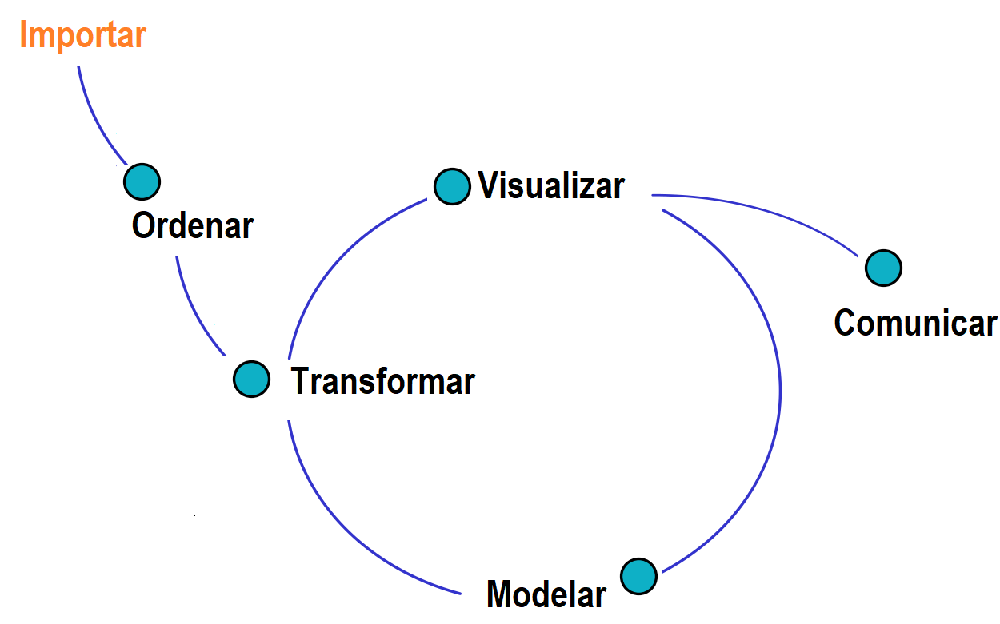
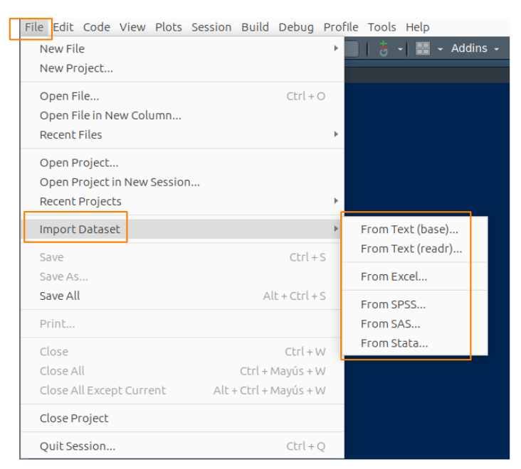

En el ciclo del análisis de datos, se llevan a cabo diversas actividades esenciales, entre las que se incluyen la imputación de datos, análisis de atípicos, estadística descriptiva:
Importar los datos.
Ordenar y estructurar los datos (Identificar posibles errores y datos faltantes, imputar los datos faltantes).
Transformar los datos según las necesidades del análisis.
Aplicar herramientas de estadística descriptiva para visualizar e interpretar la información (incluyendo el análisis de valores atípicos).
Comunicar los resultados obtenidos.
Aplicar técnicas de modelamiento estadístico.
Visualizar los resultados del modelo.
En la Figura 1.31, se presenta el flujo de estas actividades y el orden que generalmente se sigue en un análisis de datos.

La importación de datos depende del formato y de las fuentes que generan los datos. En el software R, es posible importar datos de diversas formas.
A continuación, se presenta la secuencia de pasos para importar una base de datos considerando distintos formatos y asumiendo que la base de datos ya está descargada en una carpeta de nuestro PC. Los formatos se presentan en la Tabla 1.12.

Tabla 1.12: Formatos de datos importados en
R.
| Formato | Ruta en RStudio | Descripción |
|---|---|---|
| .txt | File/Import Dataset/From Text (base) | Texto separado por espacios |
| .csv | File/Import Dataset/From Text (base) | CSV separado por “;” o “,” |
| .xlsx | File/Import Dataset/From Excel | Archivo Excel |
| .dat | File/Import Dataset/From SPSS | Archivo SPSS (software estadístico) |
| .sas7bdat | File/Import Dataset/From SAS | Archivo SAS (software estadístico) |
| .dta | File/Import Dataset/From Stata | Archivo Stata (software estadístico) |
Se puede importar una base de datos desde un repositorio que utilice
API mediante un token. En este caso,
es necesario solicitar el token correspondiente e instalar el paquete
RSocrata.
El siguiente código importa la base de datos de la Secretaría de Salud correspondiente a las personas reportadas con Covid-19 en el territorio colombiano. Para ello, se debe solicitar un token en la plataforma de Datos Abiertos Colombia y seguir la siguiente lista de códigos. Este proceso puede tardar algunos minutos, por lo pesada de la base de datos.
# Instalación del paquete RSocrata (solo una vez)
#install.packages("RSocrata", dependencies = TRUE)
# Cargar la librería
library(RSocrata)
# Definir el token de acceso
token <- "zxMsD6eXc0zlEMryRGW87Hwrz"
# Importar la base de datos usando la API
Colombia <- read.socrata("https://www.datos.gov.co/resource/gt2j-8ykr.json", app_token = token)
head(Colombia)
Para guardar el archivo en una carpeta llamada data, se
recomienda utilizar el formato RDS, ya que ocupa menos
espacio y permite una carga más rápida. En este caso, el archivo
descargado se guarda con el nombre Colombia.RDS en la
carpeta data/.
saveRDS(Colombia, file = "data/Colombia.RDS")
Es posible trabajar con datasets disponible en los
paquetes de R. Para ello, se utiliza la función
data().
En este ejemplo, se muestra cómo cargar datasets disponibles en
R o en paquetes instalados utilizando la función
data().
# Cargar datasets incluidos en R base # Dataset de flores Iris data(iris) # Dataset de velocidad y distancia de frenado de automóviles data(cars) # Cargar un dataset desde un paquete #instalado (ejemplo: paqueteMETODOS) data(vivienda_faltantes, package = "paqueteMETODOS") head(iris) head(cars) head(vivienda_faltantes)
Si el archivo se encuentra en tu equipo, puedes utilizar la función
file.choose() para conocer la ruta
completa donde está ubicado el archivo. Al ejecutar esta
función, se abre un cuadro de diálogo para seleccionar el archivo
manualmente. Luego, puedes copiar la ruta obtenida con
Ctrl+C y pegarla en el código.
# Obtener la ruta del archivo ruta <- file.choose() # Mostrar la ruta seleccionada print(ruta)
En este caso, se genera la ruta data/Colombia.RDS como
resultado de ejecutar la función file.choose() y ubicar el
archivo a importar. Una vez obtenida la ruta, se puede utilizar en la
función readRDS() para cargar el archivo en el entorno de
trabajo.
# Cargar un archivo RDS usando la ruta generada
Colombia <- readRDS("data/Colombia.RDS")
# Visualizar las primeras filas del archivo importado
head(Colombia)
En la Tabla 1.13 se presentan los códigos para importar una base de datos considerando distintos formatos y asumiendo que la base de datos ya está descargada en una carpeta de nuestro PC.
Tabla 1.13: Formatos de datos importados en R.
| Formato | Librería R | Código |
|---|---|---|
| .txt | library(readr) | datos <- read_delim(ruta_del_archivo/datos.txt, delim = “,”) |
| .csv | library(readr) | datos <- read.csv(datos.csv) |
| .xlsx | library(readxl) | datos <- read_excel(datos.xlsx, sheet = hoja1) |
| .json | library(jsonlite) | datos <- fromJSON(datos.json) |
| .dta | library(haven) | datos_stata <- read_dta(datos_stata.dta) |
| .sav | library(haven) | datos_spss <- read_sav(datos_spss.sav) |
| .sas | library(haven) | datos_sas <- read_sas(datos_sas.sas7bdat) |
- Importa la base de datos actualizada de Covid-19 desde la plataforma de Datos Abiertos Colombia utilizando la API y un token.
- Importa la base de datos del
datasetflights del paquetenycflights13y explora sus principales características.